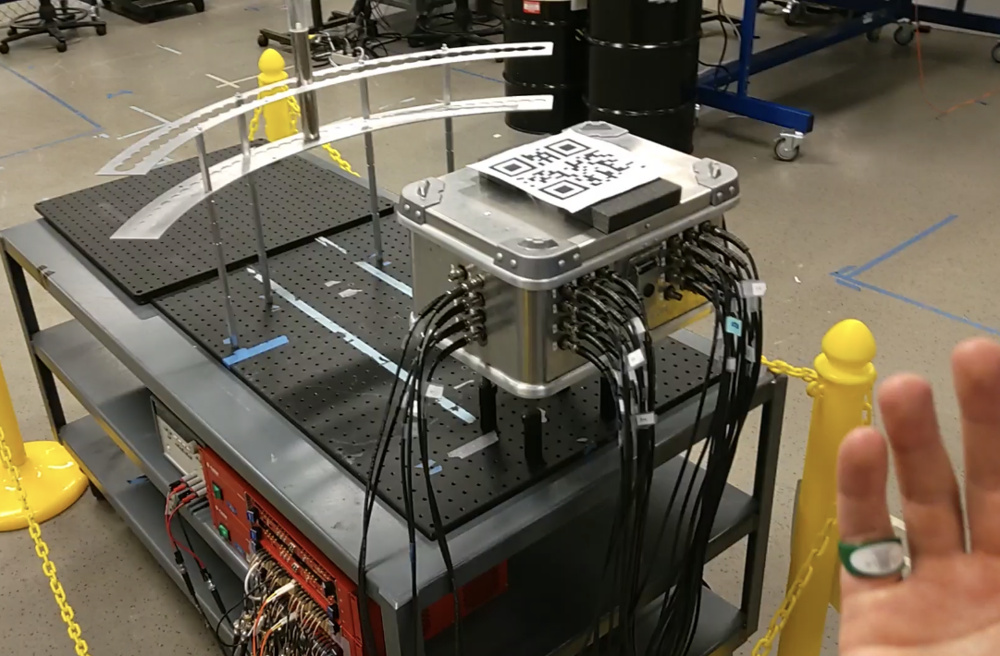

A mixed reality tool for visualizing dual neutron/gamma radiation scatter patterns on the HoloLens 2. Designed for emergency responders who need to locate radiation sources in real time without specialized training.
The H2DPI — a handheld dual particle imager — detects radiation and generates waveforms across 32 light detectors. Those waveforms are processed into cone-shaped data structures representing probable source directions. The HoloLens 2 receives those cones, calculates back-projection, and overlays the resulting heatmap directly onto the user's physical surroundings.
Radiation images previously required users to mentally project 2D angular data into 3D space. The MR overlay eliminates that step, making source localization accessible to non-specialists — emergency responders, inspectors, or personnel without radiation imaging training.
The primary users are emergency responders — the UI had to be operable quickly under stress, potentially with gloves, without requiring prior training on the system.
The H2DPI works by detecting double-scatter events — pairs of radiation interactions that occur within 30 nanoseconds of each other across two separate detector volumes. Each double-scatter event produces an estimated incidence cone: a geometric shape representing the probable direction the radiation came from. Once enough cones are stacked over time, their overlap reveals where the source is.
Until now, those cone stacks were displayed as 2D angular plots on a screen — azimuth on one axis, altitude on the other. To use them, a trained operator had to mentally translate that 2D map into a 3D direction relative to where they were standing. That translation step is slow, error-prone, and requires specialist knowledge.
By projecting the back-projected image directly onto the spatial mesh of the real environment, the angular
data becomes a heatmap on the actual walls, floors, and objects around the user. The translation step
disappears — and the hotspot appears.
Our system also added a neural network mode for low-event-rate situations — when
double-scatter events are too sparse to form a clear image, single-interaction count rates across all 20
detector volumes are fed into a trained network that predicts the source's azimuthal direction in under one
second, displaying a yellow arrow in the user's field of view in the HoloLens.
The full system spans hardware detection, data processing, and MR visualization. My work was on the Unity/HoloLens side — everything from receiving processed cone data forward.
For the HoloLens to project radiation data correctly onto the real environment, it needs to know exactly where the H2DPI detector is in 3D space. A QR code placed on the detector surface at a known offset from its center gives the HoloLens a scannable reference point.
When the user scans the QR code, the HoloLens resolves its position in the spatial map and calculates the detector's coordinate frame from that offset. All subsequent cone back-projection and ray rendering is computed relative to that reference — if the detector moves, rescanning updates the anchor.

The hand menu appears when the user turns their wrist palm-up — a native HoloLens 2 interaction via MRTK. The design constraint was the user profile: emergency responders potentially wearing gloves, under time pressure, with no prior training on this specific system.
Controls are grouped by function rather than by feature, with large touch targets and minimal hierarchy. The menu exposes all visualization modes without nesting — a user scanning quickly should be able to locate and toggle any setting in one step.
The radiation heatmap needs to convey intensity clearly across varying real-world backgrounds and to different users. The system implements five perceptually uniform sequential colormaps from Matplotlib — Viridis, Inferno, Magma, Plasma, and Cividis — switchable at runtime from the hand menu.
Perceptual uniformity matters here because a colormap that looks high-contrast on a white wall may be unreadable against green foliage, and colormaps containing red may be uninformative to users with deuteranomaly. Giving the operator runtime control addresses both problems without a fixed build-time choice.
The system was demonstrated live with real radioactive sources — a 137Cs gamma source and a 252Cf spontaneous fission source — and produced converged radiation images within 20–60 seconds of acquisition. The results were published in Nature Scientific Reports in 2024.
This project and its documentation was written to hand off to subsequent semester teams, who continued the work the following year.